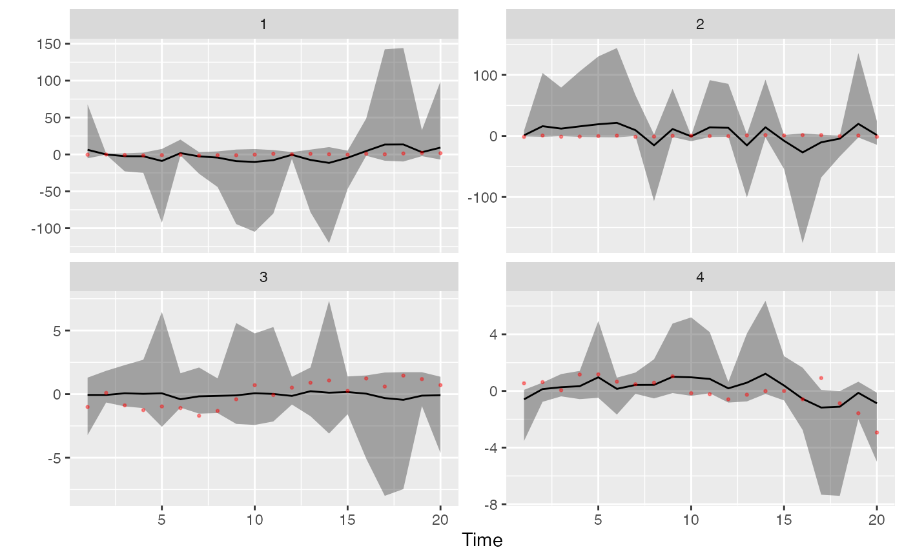

Plot the trends from a DFA
plot_fitted(modelfit, names = NULL, spaghetti = FALSE)
Arguments
| modelfit | Output from |
|---|---|
| names | Optional vector of names for plotting labels |
| spaghetti | Defaults to FALSE, but if TRUE puts all raw time series (grey) and trends on a single plot |
See also
plot_loadings fit_dfa rotate_trends
Examples
# \donttest{ y <- sim_dfa(num_trends = 2, num_years = 20, num_ts = 4) m <- fit_dfa(y = y$y_sim, num_trends = 2, iter = 50, chains = 1)#> #> SAMPLING FOR MODEL 'dfa' NOW (CHAIN 1). #> Chain 1: #> Chain 1: Gradient evaluation took 4.1e-05 seconds #> Chain 1: 1000 transitions using 10 leapfrog steps per transition would take 0.41 seconds. #> Chain 1: Adjust your expectations accordingly! #> Chain 1: #> Chain 1: #> Chain 1: WARNING: There aren't enough warmup iterations to fit the #> Chain 1: three stages of adaptation as currently configured. #> Chain 1: Reducing each adaptation stage to 15%/75%/10% of #> Chain 1: the given number of warmup iterations: #> Chain 1: init_buffer = 3 #> Chain 1: adapt_window = 20 #> Chain 1: term_buffer = 2 #> Chain 1: #> Chain 1: Iteration: 1 / 50 [ 2%] (Warmup) #> Chain 1: Iteration: 5 / 50 [ 10%] (Warmup) #> Chain 1: Iteration: 10 / 50 [ 20%] (Warmup) #> Chain 1: Iteration: 15 / 50 [ 30%] (Warmup) #> Chain 1: Iteration: 20 / 50 [ 40%] (Warmup) #> Chain 1: Iteration: 25 / 50 [ 50%] (Warmup) #> Chain 1: Iteration: 26 / 50 [ 52%] (Sampling) #> Chain 1: Iteration: 30 / 50 [ 60%] (Sampling) #> Chain 1: Iteration: 35 / 50 [ 70%] (Sampling) #> Chain 1: Iteration: 40 / 50 [ 80%] (Sampling) #> Chain 1: Iteration: 45 / 50 [ 90%] (Sampling) #> Chain 1: Iteration: 50 / 50 [100%] (Sampling) #> Chain 1: #> Chain 1: Elapsed Time: 0.006578 seconds (Warm-up) #> Chain 1: 0.008662 seconds (Sampling) #> Chain 1: 0.01524 seconds (Total) #> Chain 1:#> Warning: There were 1 chains where the estimated Bayesian Fraction of Missing Information was low. See #> http://mc-stan.org/misc/warnings.html#bfmi-low#> Warning: Examine the pairs() plot to diagnose sampling problems#> Warning: The largest R-hat is NA, indicating chains have not mixed. #> Running the chains for more iterations may help. See #> http://mc-stan.org/misc/warnings.html#r-hat#> Warning: Bulk Effective Samples Size (ESS) is too low, indicating posterior means and medians may be unreliable. #> Running the chains for more iterations may help. See #> http://mc-stan.org/misc/warnings.html#bulk-ess#> Warning: Tail Effective Samples Size (ESS) is too low, indicating posterior variances and tail quantiles may be unreliable. #> Running the chains for more iterations may help. See #> http://mc-stan.org/misc/warnings.html#tail-ess#> Inference for the input samples (1 chains: each with iter = 25; warmup = 12): #> #> Q5 Q50 Q95 Mean SD Rhat Bulk_ESS Tail_ESS #> x[1,1] -2.6 -2.6 -2.6 -2.6 0.0 2.06 4 13 #> x[2,1] 0.1 0.1 0.1 0.1 0.0 2.06 4 13 #> x[1,2] 0.2 0.2 0.2 0.2 0.0 2.06 4 13 #> x[2,2] 0.6 0.6 0.6 0.6 0.0 2.06 4 13 #> x[1,3] 1.1 1.2 1.2 1.2 0.0 2.06 3 13 #> x[2,3] 0.6 0.6 0.6 0.6 0.0 2.06 3 13 #> x[1,4] 1.2 1.3 1.3 1.3 0.0 2.06 3 13 #> x[2,4] 0.8 0.8 0.9 0.8 0.0 2.06 3 13 #> x[1,5] 3.7 3.7 3.7 3.7 0.0 2.06 3 13 #> x[2,5] 1.1 1.1 1.1 1.1 0.0 2.06 4 13 #> x[1,6] -0.4 -0.4 -0.3 -0.4 0.0 2.06 3 13 #> x[2,6] 1.1 1.1 1.1 1.1 0.0 2.06 4 13 #> x[1,7] 1.1 1.2 1.2 1.1 0.0 2.06 3 13 #> x[2,7] 0.9 0.9 0.9 0.9 0.0 2.06 3 13 #> x[1,8] 1.6 1.7 1.8 1.7 0.0 2.06 3 13 #> x[2,8] 0.2 0.2 0.2 0.2 0.0 2.06 3 13 #> x[1,9] 3.4 3.5 3.6 3.5 0.0 2.06 4 13 #> x[2,9] 0.9 0.9 0.9 0.9 0.0 2.06 4 13 #> x[1,10] 3.9 4.0 4.1 4.0 0.0 2.06 3 13 #> x[2,10] 0.5 0.5 0.5 0.5 0.0 2.06 3 13 #> x[1,11] 3.0 3.1 3.1 3.0 0.0 2.06 3 13 #> x[2,11] 0.9 0.9 0.9 0.9 0.0 2.06 3 13 #> x[1,12] 0.2 0.3 0.3 0.3 0.0 2.06 3 13 #> x[2,12] 0.8 0.8 0.8 0.8 0.0 2.06 4 13 #> x[1,13] 3.1 3.2 3.2 3.2 0.0 2.06 4 13 #> x[2,13] 0.0 0.0 0.1 0.0 0.0 2.06 4 13 #> x[1,14] 4.7 4.7 4.7 4.7 0.0 2.06 4 13 #> x[2,14] 0.7 0.7 0.7 0.7 0.0 2.06 4 13 #> x[1,15] 2.0 2.0 2.0 2.0 0.0 1.21 13 13 #> x[2,15] 0.1 0.1 0.1 0.1 0.0 2.06 4 13 #> x[1,16] -1.4 -1.3 -1.3 -1.3 0.0 2.06 3 13 #> x[2,16] -0.5 -0.5 -0.5 -0.5 0.0 2.06 4 13 #> x[1,17] -4.8 -4.8 -4.7 -4.8 0.1 2.06 3 13 #> x[2,17] -0.1 -0.1 -0.1 -0.1 0.0 2.06 4 13 #> x[1,18] -4.6 -4.6 -4.5 -4.6 0.1 2.06 3 13 #> x[2,18] -0.1 0.0 0.0 0.0 0.0 2.06 4 13 #> x[1,19] -0.5 -0.5 -0.4 -0.5 0.1 2.06 3 13 #> x[2,19] 0.5 0.5 0.5 0.5 0.0 2.06 4 13 #> x[1,20] -2.9 -2.8 -2.7 -2.8 0.1 2.06 3 13 #> x[2,20] -0.1 -0.1 -0.1 -0.1 0.0 2.06 3 13 #> Z[1,1] 0.8 0.8 0.8 0.8 0.0 2.06 4 13 #> Z[2,1] -25.8 -25.5 -24.6 -25.3 0.4 2.06 3 13 #> Z[3,1] 15.5 16.0 16.2 15.9 0.3 2.06 3 13 #> Z[4,1] -2.3 -2.2 -2.2 -2.2 0.0 0.95 13 13 #> Z[1,2] 0.0 0.0 0.0 0.0 0.0 1.00 13 13 #> Z[2,2] 0.0 0.0 0.0 0.0 0.0 1.87 4 13 #> Z[3,2] -59.9 -59.1 -56.8 -58.7 1.2 2.06 3 13 #> Z[4,2] 15.8 16.9 17.4 16.7 0.6 2.06 3 13 #> log_lik[1] -2.1 -2.1 -2.1 -2.1 0.0 2.06 3 13 #> log_lik[2] -400.4 -363.3 -284.1 -349.4 42.9 2.06 3 13 #> log_lik[3] -196.9 -177.9 -138.6 -171.3 21.4 2.06 3 13 #> log_lik[4] -6.3 -5.8 -5.1 -5.7 0.4 2.06 3 13 #> log_lik[5] -1.9 -1.8 -1.8 -1.9 0.0 2.06 3 13 #> log_lik[6] -4.7 -4.2 -3.4 -4.0 0.5 2.06 3 13 #> log_lik[7] -91.9 -83.3 -65.2 -80.3 9.7 2.06 3 13 #> log_lik[8] -9.1 -8.2 -6.5 -7.9 1.0 2.06 3 13 #> log_lik[9] -2.1 -2.1 -2.1 -2.1 0.0 2.06 3 13 #> log_lik[10] -75.1 -66.0 -48.1 -63.0 10.1 2.06 3 13 #> log_lik[11] -23.0 -21.3 -17.1 -20.5 2.1 2.06 3 13 #> log_lik[12] -6.8 -6.2 -5.0 -6.0 0.7 2.06 3 13 #> log_lik[13] -2.3 -2.3 -2.3 -2.3 0.0 1.48 8 13 #> log_lik[14] -90.7 -79.8 -57.3 -75.9 12.4 2.06 3 13 #> log_lik[15] -72.0 -65.5 -51.3 -63.1 7.5 2.06 3 13 #> log_lik[16] -11.6 -10.3 -7.7 -9.9 1.5 2.06 3 13 #> log_lik[17] -3.2 -3.1 -2.9 -3.1 0.1 2.06 3 13 #> log_lik[18] -791.7 -707.9 -531.6 -677.2 96.5 2.06 3 13 #> log_lik[19] -2.3 -2.2 -2.1 -2.2 0.1 2.06 4 13 #> log_lik[20] -8.5 -7.6 -5.5 -7.2 1.2 2.06 3 13 #> log_lik[21] -1.9 -1.8 -1.8 -1.9 0.0 2.06 3 13 #> log_lik[22] -8.3 -7.8 -7.5 -7.8 0.3 2.06 4 13 #> log_lik[23] -428.2 -386.9 -302.8 -372.9 45.9 2.06 3 13 #> log_lik[24] -33.7 -29.7 -22.3 -28.6 4.3 2.06 3 13 #> log_lik[25] -2.3 -2.3 -2.3 -2.3 0.0 2.06 4 13 #> log_lik[26] -73.4 -63.4 -43.5 -60.2 11.1 2.06 3 13 #> log_lik[27] -84.8 -77.1 -61.4 -74.5 8.5 2.06 3 13 #> log_lik[28] -14.0 -12.4 -9.4 -11.9 1.8 2.06 3 13 #> log_lik[29] -2.3 -2.3 -2.3 -2.3 0.0 2.06 4 13 #> log_lik[30] -169.5 -147.6 -104.7 -140.7 24.0 2.06 3 13 #> log_lik[31] -22.8 -20.3 -15.3 -19.5 2.7 2.06 3 13 #> log_lik[32] -2.0 -1.9 -1.8 -1.9 0.1 2.06 3 13 #> log_lik[33] -3.2 -3.1 -2.9 -3.1 0.1 2.06 3 13 #> log_lik[34] -717.6 -640.3 -474.5 -611.2 90.5 2.06 3 13 #> log_lik[35] -2.2 -2.1 -2.1 -2.1 0.0 1.87 4 13 #> log_lik[36] -6.2 -5.6 -4.2 -5.4 0.8 2.06 4 13 #> log_lik[37] -2.9 -2.9 -2.8 -2.8 0.1 2.06 3 13 #> log_lik[38] -945.9 -846.1 -630.6 -808.3 117.2 2.06 3 13 #> log_lik[39] -104.9 -94.6 -72.1 -90.9 12.2 2.06 3 13 #> log_lik[40] -2.0 -1.8 -1.8 -1.9 0.1 2.06 3 13 #> log_lik[41] -2.1 -2.1 -2.0 -2.1 0.0 2.06 3 13 #> log_lik[42] -534.5 -478.3 -353.7 -456.0 67.3 2.06 3 13 #> log_lik[43] -2.5 -2.4 -2.4 -2.5 0.0 1.09 8 13 #> log_lik[44] -8.1 -7.3 -5.4 -6.9 1.0 2.06 4 13 #> log_lik[45] -1.9 -1.8 -1.8 -1.9 0.0 2.06 3 13 #> log_lik[46] -6.7 -5.7 -3.8 -5.4 1.1 2.06 3 13 #> log_lik[47] -179.8 -162.1 -126.8 -156.1 19.6 2.06 3 13 #> log_lik[48] -19.6 -17.4 -13.1 -16.7 2.4 2.06 3 13 #> log_lik[49] -2.1 -2.1 -2.1 -2.1 0.0 2.06 3 13 #> log_lik[50] -585.3 -524.3 -399.1 -503.6 68.9 2.06 3 13 #> log_lik[51] -192.3 -174.2 -138.7 -168.7 19.7 2.06 3 13 #> log_lik[52] -4.8 -4.6 -4.4 -4.6 0.2 1.10 7 13 #> log_lik[53] -3.0 -2.9 -2.8 -2.9 0.1 2.06 3 13 #> log_lik[54] -1300.5 -1172.4 -903.6 -1126.7 146.9 2.06 3 13 #> log_lik[55] -88.7 -81.3 -67.0 -79.2 8.0 2.06 3 13 #> log_lik[56] -2.2 -2.1 -2.0 -2.1 0.1 2.06 4 13 #> log_lik[57] -2.2 -2.1 -2.1 -2.2 0.0 2.06 3 13 #> log_lik[58] -225.0 -203.8 -160.1 -196.9 24.0 2.06 3 13 #> log_lik[59] -54.4 -50.4 -42.8 -49.3 4.2 2.06 3 13 #> log_lik[60] -2.5 -2.3 -2.3 -2.4 0.1 2.06 4 13 #> log_lik[61] -2.2 -2.2 -2.1 -2.2 0.0 2.06 3 13 #> log_lik[62] -98.0 -86.5 -62.6 -82.0 13.1 2.06 3 13 #> log_lik[63] -5.7 -5.1 -4.7 -5.2 0.4 2.06 4 13 #> log_lik[64] -3.8 -3.7 -3.3 -3.6 0.2 2.06 3 13 #> log_lik[65] -3.3 -3.2 -3.0 -3.1 0.1 2.06 3 13 #> log_lik[66] -1292.4 -1153.3 -861.3 -1099.7 159.7 2.06 3 13 #> log_lik[67] -460.6 -406.0 -298.1 -388.0 60.4 2.06 3 13 #> log_lik[68] -7.8 -6.8 -5.9 -6.8 0.7 2.06 3 13 #> log_lik[69] -4.0 -3.9 -3.6 -3.8 0.2 2.06 3 13 #> log_lik[70] -1224.7 -1088.2 -805.2 -1036.6 155.1 2.06 3 13 #> log_lik[71] -479.9 -421.3 -306.0 -402.0 64.4 2.06 3 13 #> log_lik[72] -11.8 -10.3 -8.5 -10.2 1.2 2.06 3 13 #> log_lik[73] -2.3 -2.3 -2.3 -2.3 0.0 2.06 4 13 #> log_lik[74] -16.0 -12.5 -6.7 -11.5 3.4 2.06 3 13 #> log_lik[75] -142.2 -121.5 -81.4 -114.8 22.5 2.06 3 13 #> log_lik[76] -13.5 -11.8 -8.7 -11.3 1.8 2.06 3 13 #> log_lik[77] -3.2 -3.1 -2.9 -3.1 0.1 2.06 3 13 #> log_lik[78] -486.3 -428.2 -304.5 -405.1 67.5 2.06 3 13 #> log_lik[79] -148.7 -127.3 -85.4 -120.3 23.6 2.06 3 13 #> log_lik[80] -6.9 -6.1 -5.1 -6.1 0.6 2.06 3 13 #> psi[1] 4.5 4.5 4.5 4.5 0.0 2.06 4 13 #> psi[2] 0.2 0.2 0.2 0.2 0.0 1.07 7 13 #> xstar[1,1] -5.2 -4.3 -2.7 -4.2 1.0 1.15 8 13 #> xstar[2,1] 0.1 1.8 3.6 1.7 1.2 1.10 9 13 #> sigma[1] 2.4 2.5 2.8 2.6 0.1 2.06 3 13 #> lp__ -14519.9 -13173.9 -10342.2 -12679.8 1548.3 2.06 3 13 #> #> For each parameter, Bulk_ESS and Tail_ESS are crude measures of #> effective sample size for bulk and tail quantities respectively (an ESS > 100 #> per chain is considered good), and Rhat is the potential scale reduction #> factor on rank normalized split chains (at convergence, Rhat <= 1.05).# }